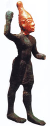

Баал або Балу ("господар", "владика"), в західній міфології одне з найбільш уживаних прізвиськ різних богів. Найбільшим поширенням користувався культ Баала - бога бурі, грому, блискавок, дощу, пов'язаного з вологою родючості. Древнесемитского Балу - син Мулу і Асірат, володарки сущого.
Міфи згадують і трьох дочок бога: Падарай ("пітательніца"), Талай ("РОСНО") і Арцано ("земля"). Сестрою і коханої Баала вважалася Анат, богиня полювання і битви. Владика землі і родючості, Баал постає як вмираючий і воскресающий бог, чий головний ворог - бог смерті і підземного світу Муту. Баал загинув, визнавши над собою владу Муту. Анат зажадала у бога смерті повернення чоловіка, а отримавши відмову, знищила Муту, розрубала, розмолов і спалила його тіло, а попіл розвіяла по полю. Баал, однак, воскрес і повернув собі владу.
Сутичка богів постійно поновлювалася; загибель бога викликала в'янення і посуху, а воскресіння тягло за собою розквіт природи. Баал боровся і з богом морської стихії Йамму, який вимагав, щоб Баал став його рабом. Однак перемога залишилася за богом бурі, грому і блискавок. У єгипетській міфології древнесемитского Балу відповідає Сет, в епоху еллінізму Баал ототожнювався з грецьким Зевсом.